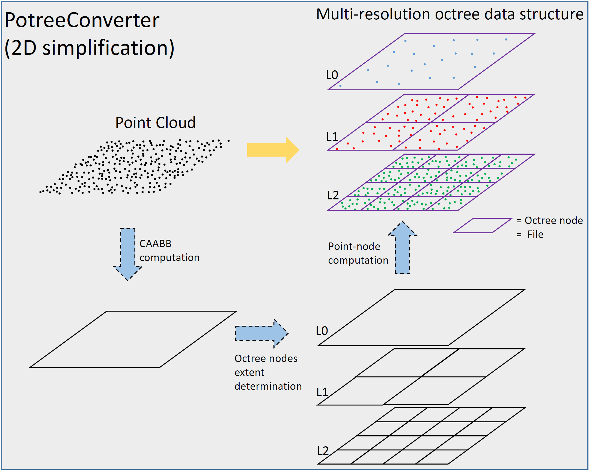

PotreeConverter
PotreeConverter.jl is a Julia version of PotreeConverter1.7.
A Potree is a data structure, used to store huge point clouds, based on octree. All details of this structure are described by Markus Schütz in his thesis.

2D simplification of the PotreeConverter steps to create a 3 levels multi-resolution octree.
Build-up
PotreeConverter implement conversion of one or more point clouds in a Potree format, which saves the result in the filesystem:
Initially, the octree consists of a single root node, in which all the points are stored.
A minimum distance, spacing, is defined as a function of the calculated cubic bounding box, CAABB.
For each unprocessed leaf node, which has reached a certain number of points, a subset M of points is extracted such that it satisfies the condition of Poisson Disk.
To extract subset M the algorithm makes use of a sparse grid.
The remaining points are stored in a temporary array.
The leaf node expands iff the size of the array is greater than a chosen threshold.
The leaf node becomes an internal node storing in itself the subset M.
The remaining points are passed to the child nodes.
Spacing is halved at each level.
The procedure is repeated until none of the processed leaf nodes expands further.
The data is regularly flushed to the disk and removed from memory, whenever a certain number of points have been processed. This allows users to view the current conversion status in the Potree format after each flush, without having to wait until the conversion is complete.